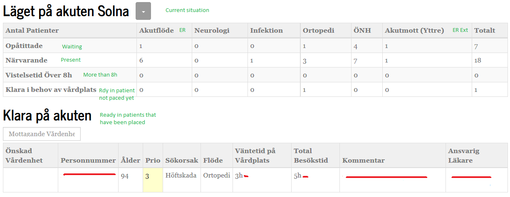
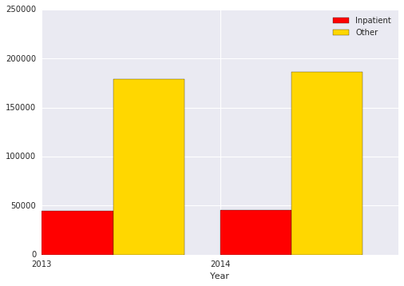
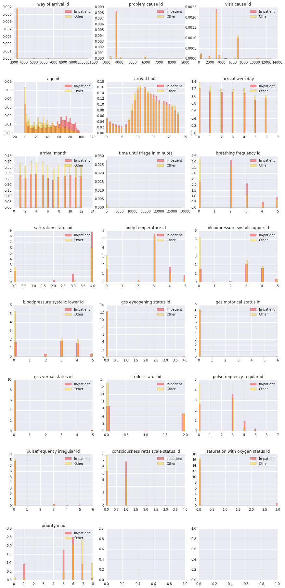

It's late in the week and work is piling up. You run down the escalator to catch the northbound tube. Anchovised with your fellow commuters you catch your breath when you feel a sudden chest pain. At the same time you get nauesous and your vision just blurs until you pass out.
You wake up just as the ambulance enters Central ER, feeling a little dizzy you still have all your senses. At arrival you are welcomed by a shiny new doctor robot from Healthy Hearts Tech. A paramedic takes a brief look at you and adjusts a bar on the robots touchscreen brightly labeled ROC sensitivity before running to the next patient. As the robots commences it's examination of you the paramedic leaves and you get some final advice: "If it starts to stutter just press the big red button.
When patient arrives into a hospital's ER, medical personnel has important decisions to make. Some patients should be discharged immediately, some could wait, and some should be attended by a doctor immediately.
Here's a sample dashboard that is displayed on a large wall screen in the ER department. The dashboard shows the number patients on each workflow stage.
The stages are the following:
We want to use machine learning methods to predict as early as possible whether a person coming into ER will require hospitalization. There's a trade off here. On one hand, we want to minimize a number of hospitalized patients, hospitalization is very expensive and saving money will let the hospital to provide care in more important areas. On the other hand, we don't want to send home a patient who will have a complication, or worse die because of this. Human life and health are priceless.
Our data set is the ER log, also called akutliggaren. In the ER log patients are tracked from when they enter the ER until they exit the ER. The data in the ER log have been extracted from the hospital's main system for keeping electronic medical records and covers the majority of the ER wards in the reception area.
The Er Log the project has access to has 100+ fields and one defensive initial idea are to focus on the triage data. The first examination plus the medical history of the patient are what nurses and doctor are using to assess the status of a patient and also to give a patient an initial priority. Many Swedish hospital is using Retts (http://predicare.se/en/om-retts/) decision support system for emergency medicine when assessing the patients and at the time of assessment a number of vital parameters are collected.
In that way the project piggy rides on the domain knowledge of the organisation and try to use features that they use. We will see if that is a good or bad idea, but we can always extend with more features later on. We only have access to the ER log and not the medical history of the patients and there already from the beginning we have some limitations that most probably will affect the precision of our predictions. In addition to that we do not get the “touch and feel” a nurse and doctor get’s when talking to a patient, they can use their hands to feel body temperature, sweating and pinpoint things like abdominal pains etc.
The vital parameters that we have access to are:
In addition to that we will use patient Age. It seems that ER visits highly depend on the month, day of week, and hour of day, so we will add these features as well.
We aim to predict if a patient will need further care and become an Inpatient. We have two categories: Others and Inpatients. Others include people going home and outpatients. The main difference between an outpatient and an inpatient from a hospital logistics perspective is that the inpatients stays overnight and requires more resources. An outpatient may have an appointment at the hospital for example the following day or a week later for check up but their direct interaction (and use of resources) with the hospital is relatively brief.
On this chart we display a bar chart of number of inpatients vs others by year:
As we see, there're much more others than inpatients.
On this chart we display histograms of different variables by inpatient/other status:
As we see, there's a difference in distribution in almost all variables. This gives us a promise that we can predict whether the patient will be inpatient or outpatient.
TODO
As a baseline, we will use the model which sends all patients home. It's correct in about 80.1% of the cases. This model is very imprecise, and doesn't take into account the cost of lost lifes and health, as well as cost of the treatment, but it's ok as a baseline.
TODO
We've chosen the following models
TODO
TODO